1. Устанавливает ли конституция РФ права граждан на занятия физической культурой и спортом?
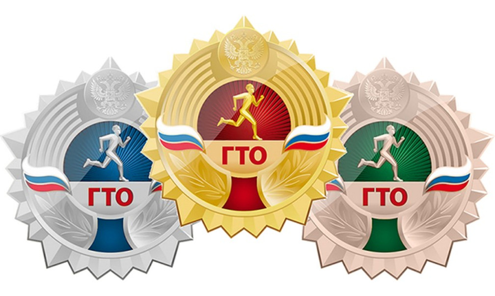
2. В каком году было утверждено положение о Всероссийском физкультурно-спортивном комплексе «Готов к труду и обороне»?
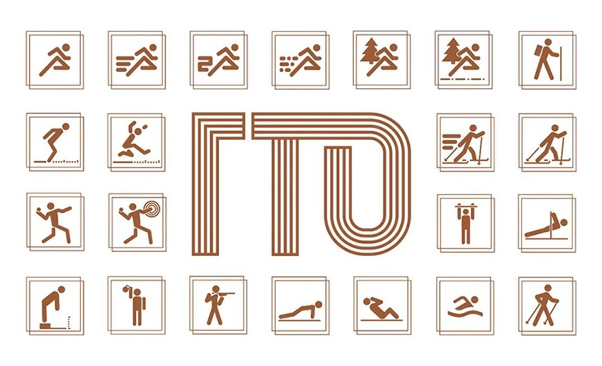
3. Что делает Всероссийский физкультурно-спортивный комплекс «Готов к труду и обороне»?
4. Из скольких ступеней по возрастным категориям состоит комплекс ГТО?
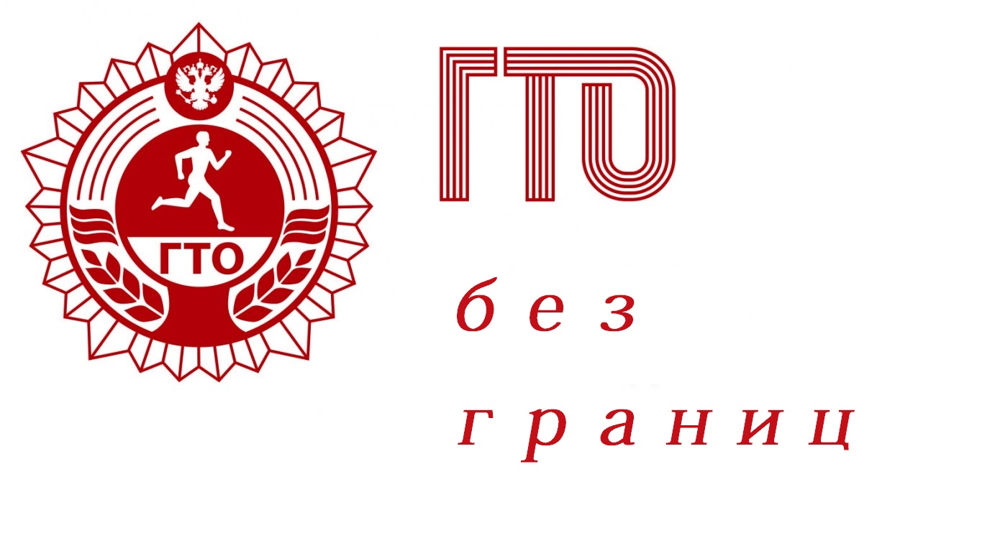
5. Для каких возрастных групп населения предназначен комплекс ГТО?
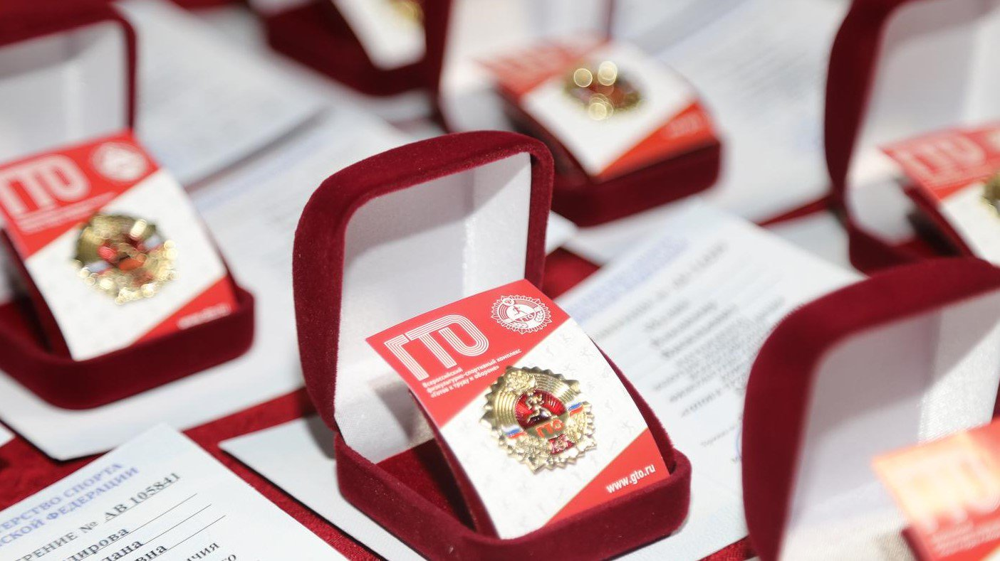
6. Какая ступень ГТО предназначена для юношей и девушек возрастом 16 - 17 лет
7. Какая дистанция бега обязательна для сдачи норматива ГТО?
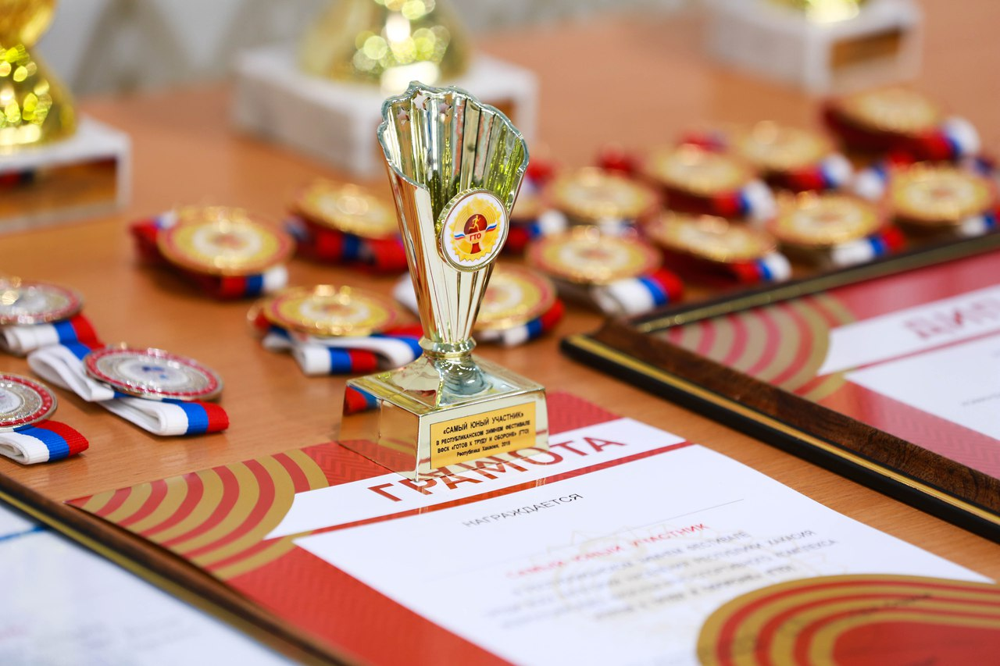
8. Какое испытание считается (по выбору) для юношей и/или девушек 16 - 17 лет в комплексе ГТО?
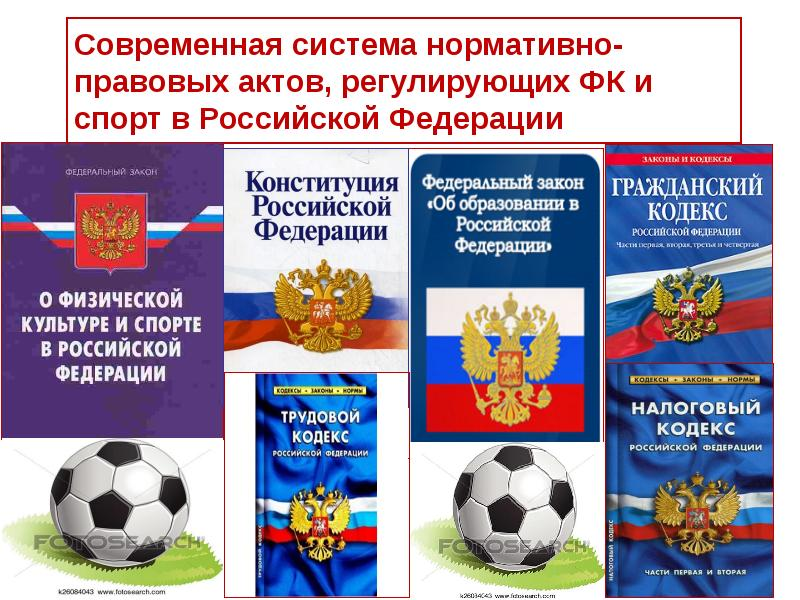
9. Федеральный закон о физической культуре и спорте в РФ устанавливает:
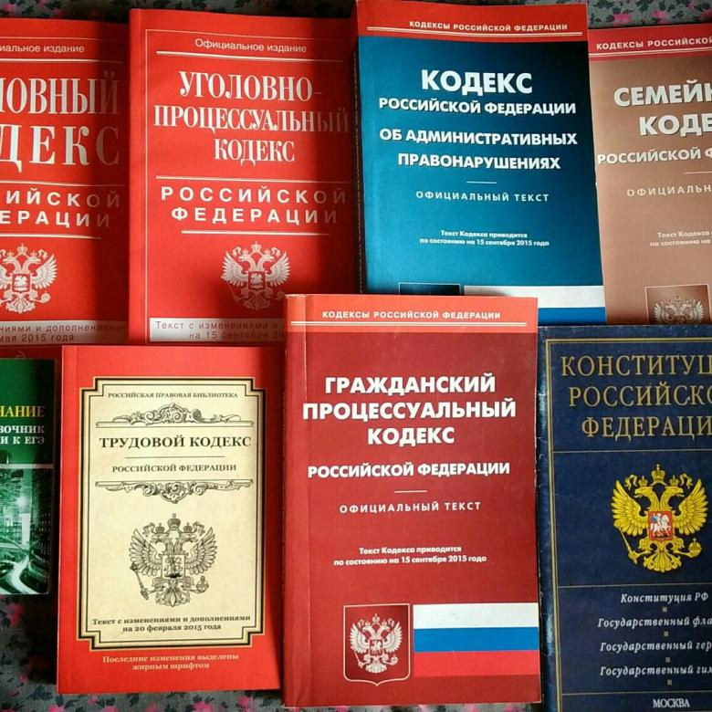
10. Могут ли субъекты РФ самостоятельно принимать законы о физической культуре и спорте?
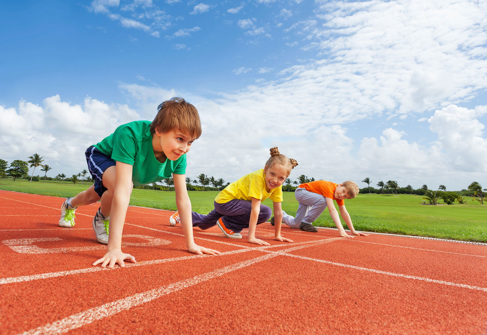
11. В 3-ей статье Федерального закона о физической культуре и спорте «Основные принципы законодательства о физической культуре и спорте» отмечается:
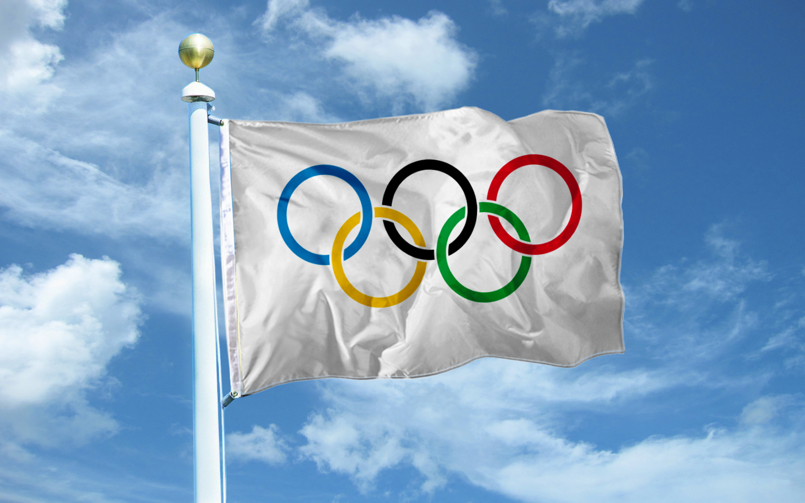
12. В 11-ой статье Федерального закона о физической культуре и спорте «Олимпийское движение России. Олимпийский комитет России» говорится, что целями олимпийского движения являются:
13. Допинг – это:
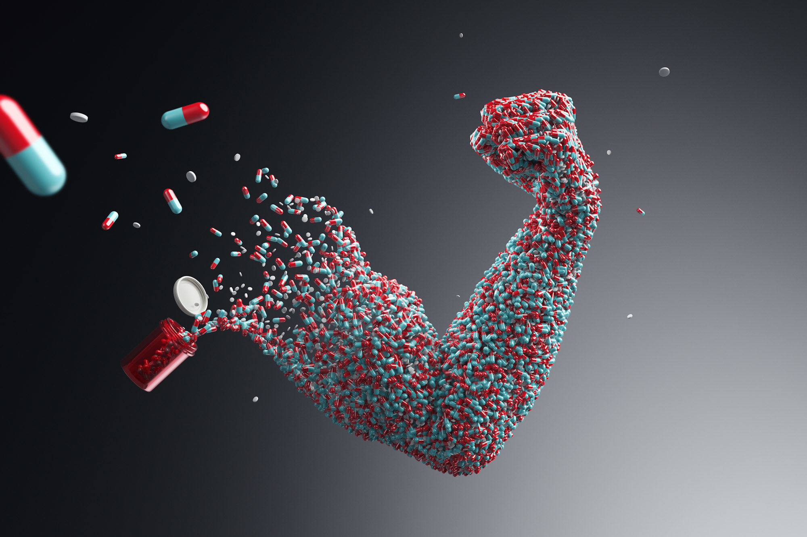
14. Может ли употребление допинга привести к дисквалификации спортсмена с соревнований?
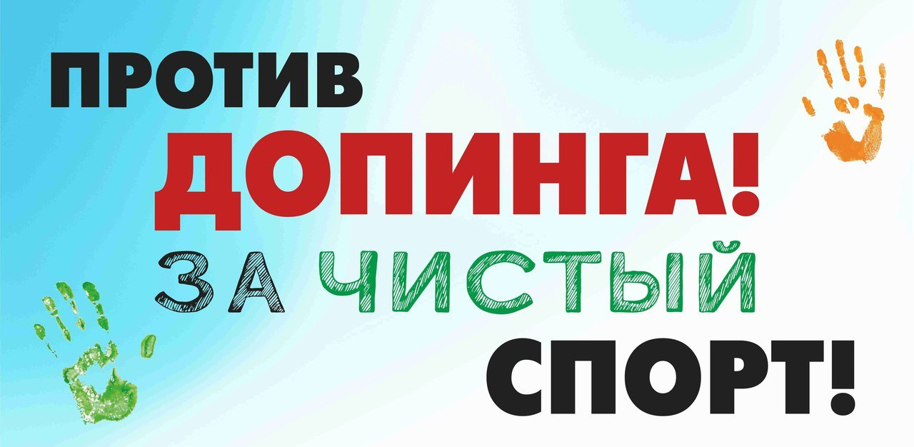
15. К мерам по противодействию использования допинга относят